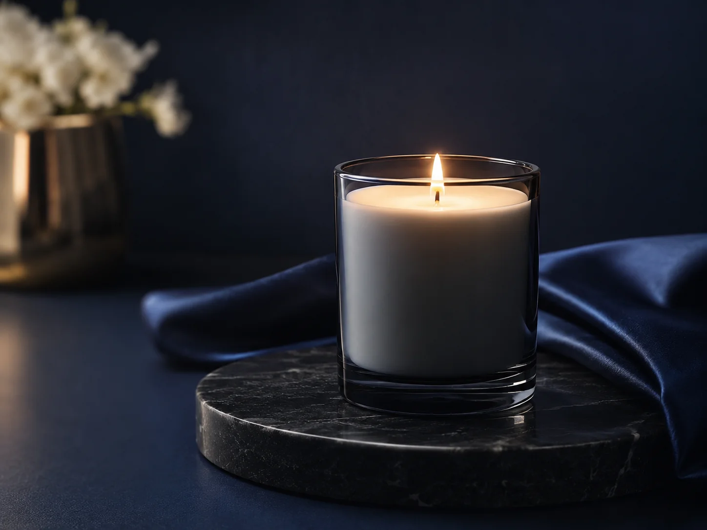
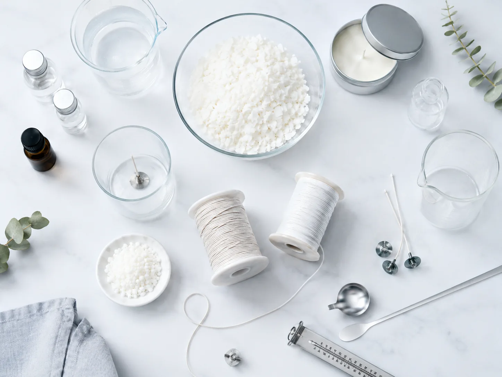

材料と制作の知識
材料の特性と制作工程を踏まえ、用途に合う選択肢を分かりやすくご案内します。

CANDLE MATERIALS & OEM PARTNER
材料選びから、商品化まで。
B’s choiceは、キャンドルをつくる人と企業のための専門パートナーです。
キャンドル材料販売
02法人向け資材供給
03OEMキャンドル
B’s choice（ビーズチョイス）は、福岡県八女市を拠点に、キャンドル材料の販売、法人向けの資材供給、OEMキャンドルの制作を行う会社です。
九州のロウソクメーカー・国光産業で培われてきたキャンドル事業を引き継ぎ、ワックスや芯をはじめとする材料への知識と制作現場への理解を、現在の材料販売とOEM制作に生かしています。
材料を販売して終わるのではなく、つくりたいものや用途に応じて、材料選びから商品化まで相談できる存在でありたいと考えています。作家の一つの作品にも、企業の一つの企画にも、同じ誠実さで向き合います。
材料の特性と制作工程を踏まえ、用途に合う選択肢を分かりやすくご案内します。
作品や製品の土台となる材料だからこそ、品質を大切に、誠実にお届けします。
ご希望が固まっていない段階でも、分かることから伺い、必要な条件を整理します。
個人の作品づくりから法人の商品企画まで。必要な材料、製品づくり、学びの機会を、それぞれの目的に合わせて提供しています。

FOR CANDLE MAKERS
キャンドルの種類や形状、容器、香りの有無によって、適したワックスや芯は異なります。B’s choiceでは、制作現場への理解をもとに、ワックス、芯、香料、染料、容器など、キャンドル制作に必要な材料を取り扱っています。
キャンドル作家、キャンドルアーティスト、教室運営者の方は、オンラインショップからご購入いただけます。初めて使う材料や、選び方に迷う場合も、用途や制作規模に応じてご相談ください。
ワックス／芯／香料／染料／容器 ほか
CANDLE MATERIALS FOR BUSINESS
法人・事業者向けに、商品製造などに使用するキャンドル材料のまとまったご注文や、継続的な仕入れのご相談を承ります。
ご希望の材料、使用目的、数量、希望納期を伺い、取り扱い内容やご注文までの進め方をご案内します。
材料名や仕様が分からない場合も、用途や現在お使いの材料など、分かる範囲でお知らせください。確認すべき点から順に整理します。
FOR BRANDS & COMPANIES
店舗販売商品、ブランドオリジナル、ギフト、ノベルティなど、目的や世界観に合わせたキャンドルのOEM制作を承ります。
初めてのOEMで、何から決めればよいか分からなくても問題ありません。
完成イメージや用途、希望数量、納期、ご予算など、現時点で分かることからお聞かせください。ブランドのイメージを共有しながら、香り、容器、デザインなどの仕様と、実現に必要な条件を順に整理します。
ご相談の時点で、すべてを決めておく必要はありません。小さな疑問や検討中のアイデアも、気兼ねなくお知らせください。
OEM制作について相談する店舗販売商品
ブランド商品
ギフト
ノベルティ
つくりたいものや用途を、分かる範囲でお知らせください。
ブランドのイメージ、数量、納期、ご予算などを確認します。
香り、容器、デザインなどの仕様を整理し、必要に応じて試作します。
決定した仕様に沿って、制作を進めます。
仕上がりを確認し、ご指定の場所へ納品します。
※案件の内容・数量・仕様により、対応可否や進行方法、納期は異なります。まずはご希望をお聞かせください。
CREATE, LEARN, CONNECT
キャンドル作家、キャンドルアーティスト、教室運営者の方が、制作と活動を続けていけるように。
B’s choiceは、材料の販売に加え、技法や販売・発信に役立つ情報、学びと交流の機会を届けています。
オンラインショップ、Instagram、オンラインサロン「キャンドルアーティスト倶楽部」を通じて、作品づくりと活動の両面を支えます。
CORPORATE PROFILE
07 CONTACT
START A CONVERSATION
OEM制作、法人向けの材料仕入れ、その他のご相談をメールで承ります。
商品イメージ、用途、数量、希望納期、ご予算など、現時点で分かることだけで構いません。
「何から相談すればよいか分からない」という場合は、その旨を一言お知らせください。内容を確認し、必要な項目から順にご案内します。
ご検討中の内容／用途・商品イメージ／数量／希望納期／ご予算
※未定の項目は、空欄のままで構いません。